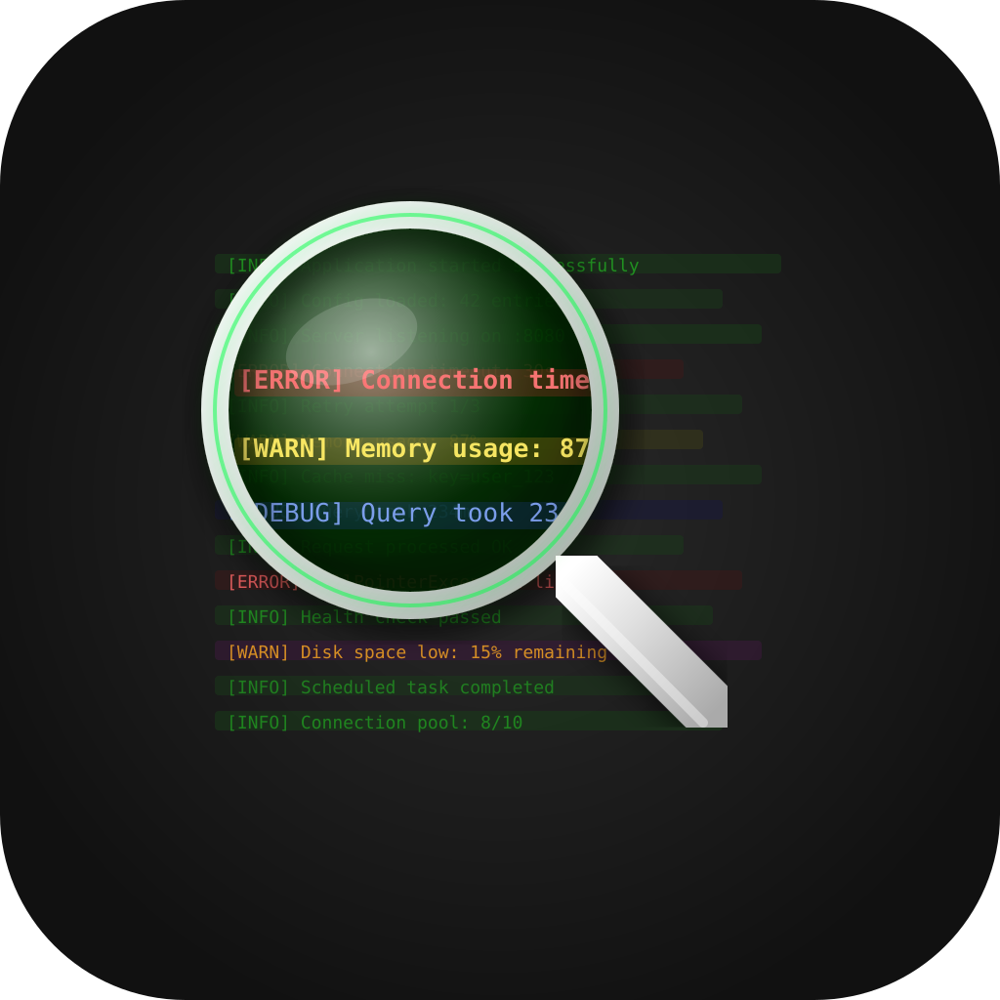
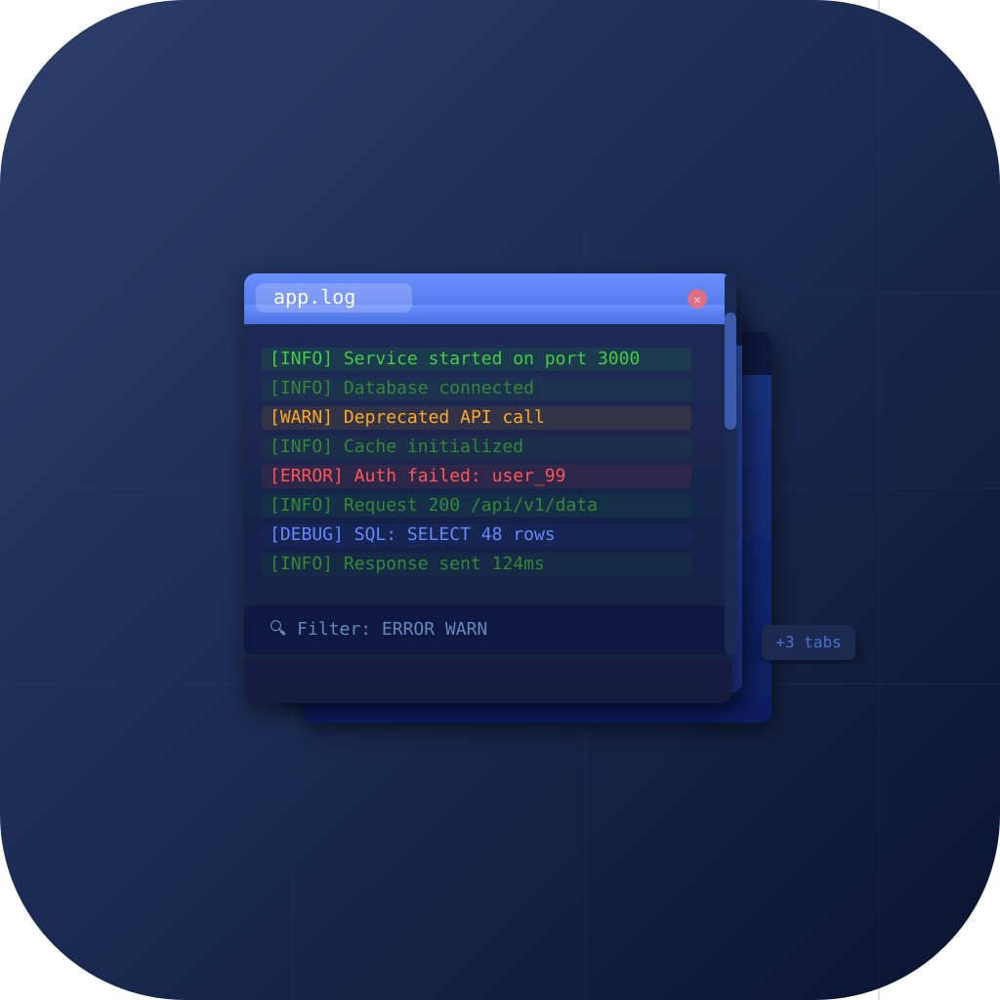
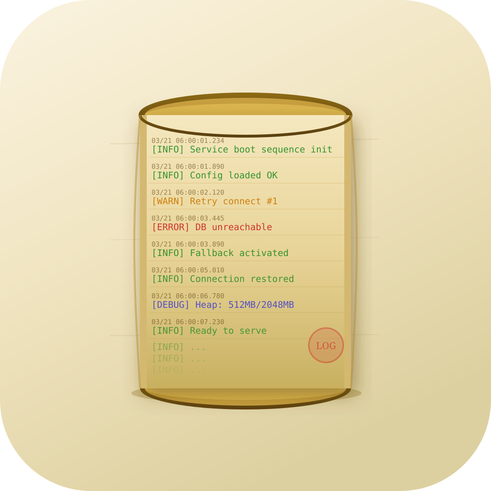
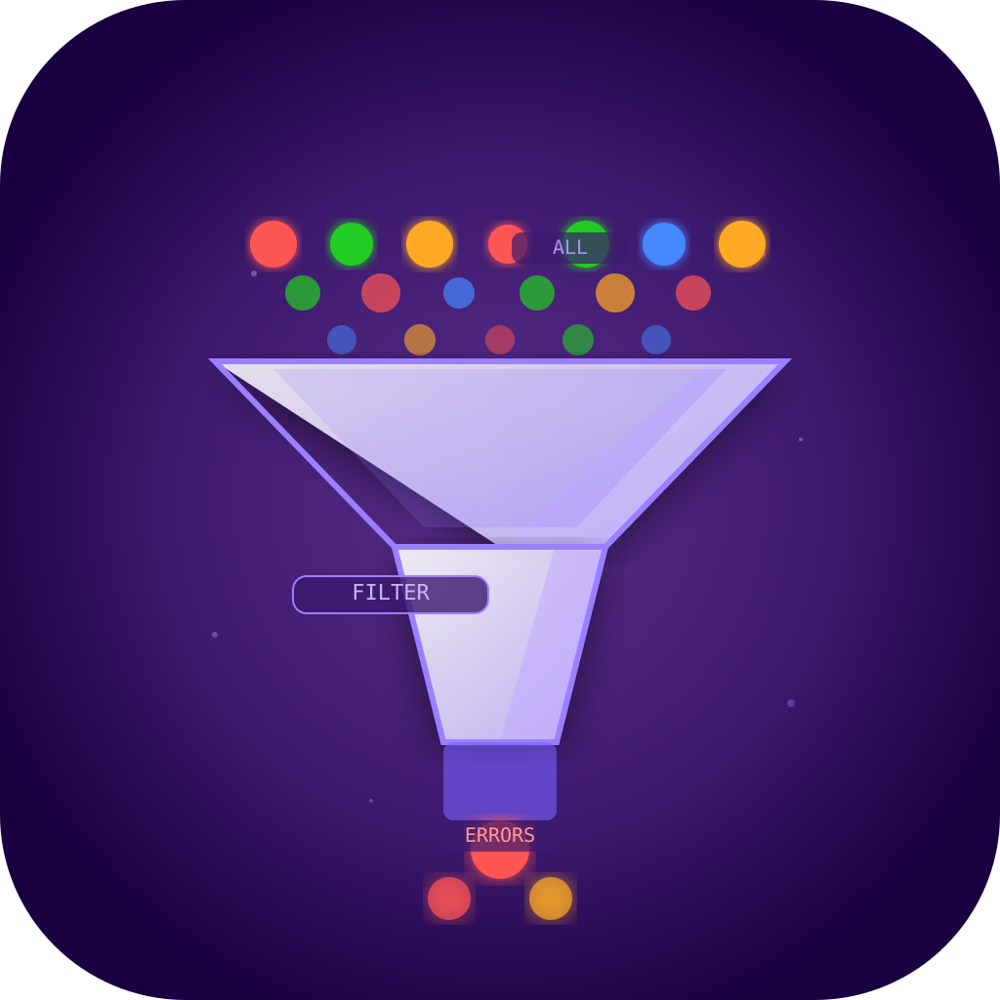
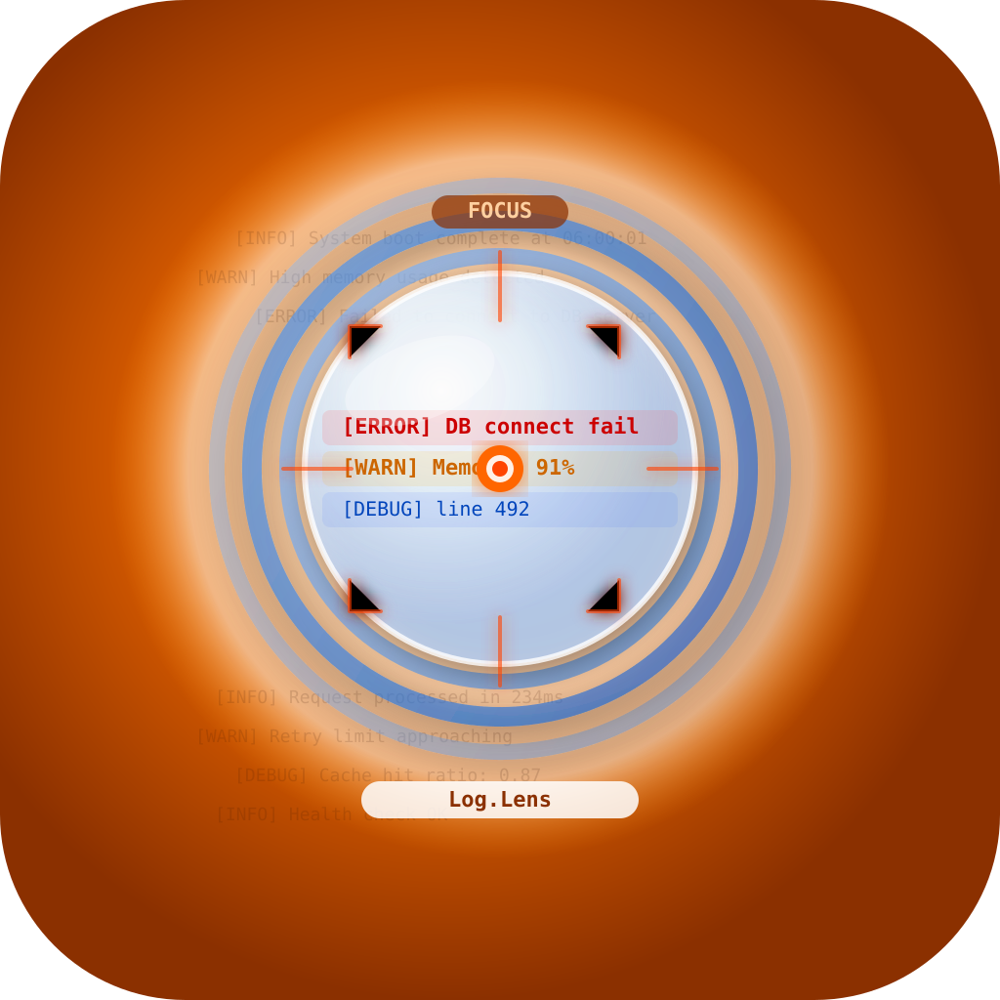

Log.Lens
멀티탭 로그 파일 뷰어, 실시간 필터/검색, 대용량 파일 지원 — Candidate_20260321_0610

icon_01.svg
돋보기 + 로그 라인
로그 분석 도구
중앙 심볼 · literal

icon_02.svg
겹쳐진 탭들
멀티탭 로그 뷰어
레이어드 · literal

icon_03.svg
스크롤 두루마리
로그 스트림 뷰
공간 장면 · metaphor

icon_04.svg
필터 깔때기 + 색상 분류
중요 로그만 추출
기하학 추상 · metaphor

icon_05.svg
카메라 렌즈 포커스
Log.Lens 이름 표현
대각선 동적 · hybrid